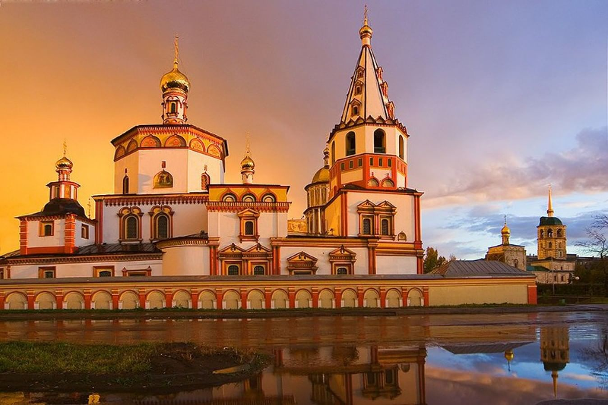

Собор Богоявления
Один из старейших православных храмов Сибири, построенный в стиле сибирского барокко. Собор был основан в 1693 году и является архитектурным памятником федерального значения.
Иркутск — старинный сибирский город, основанный в 1661 году. Расположенный на берегах реки Ангары, он является культурным, экономическим и научным центром Восточной Сибири. Город сохранил уникальное историческое наследие, сочетающее в себе деревянное зодчество, каменную архитектуру и современные постройки. Неофициально Иркутск часто называют «сибирским Парижем» за его богатое архитектурное наследие и «воротами в Байкал», так как именно отсюда начинается большинство путешествий к всемирно известному озеру.
Один из старейших православных храмов Сибири, построенный в стиле сибирского барокко. Собор был основан в 1693 году и является архитектурным памятником федерального значения.
Исторический район города, где сохранены и восстановлены памятники деревянного зодчества. Это уникальный музей под открытым небом, где можно увидеть традиционную сибирскую архитектуру.
Восстановленный памятник императору Александру III, расположенный на набережной Ангары. Памятник символизирует важную роль императора в развитии Сибири.
Один из старейших музеев Сибири, основанный в 1782 году. Музей располагает богатейшими коллекциями, рассказывающими о природе, истории и культуре Восточной Сибири.
Уникальное место, где можно увидеть выступления байкальских нерп - единственных в мире пресноводных тюленей. Нерпы демонстрируют удивительные способности: играют на музыкальных инструментах, рисуют картины и решают математические задачи. Это одно из самых популярных мест для посещения с детьми.